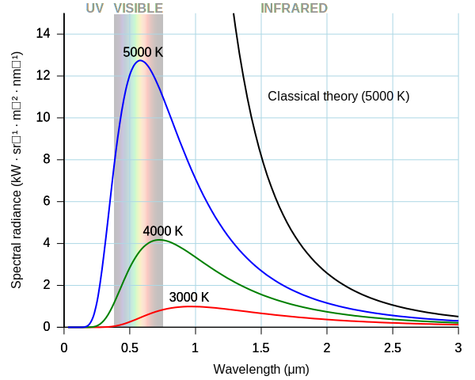
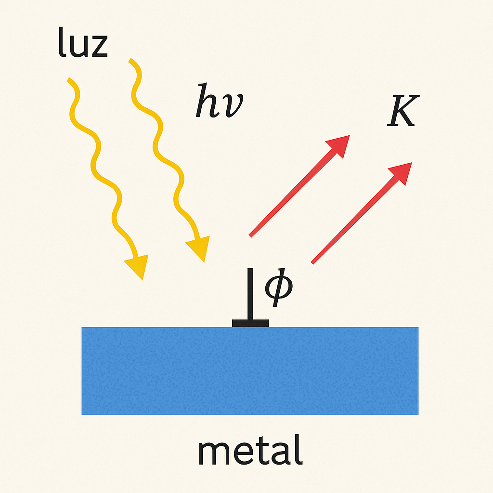
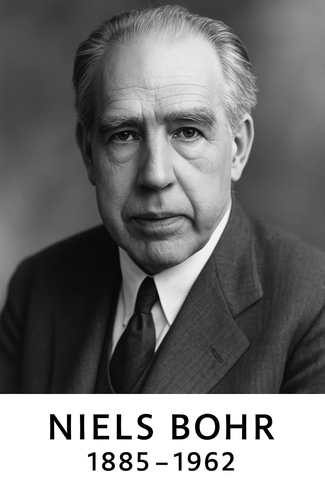
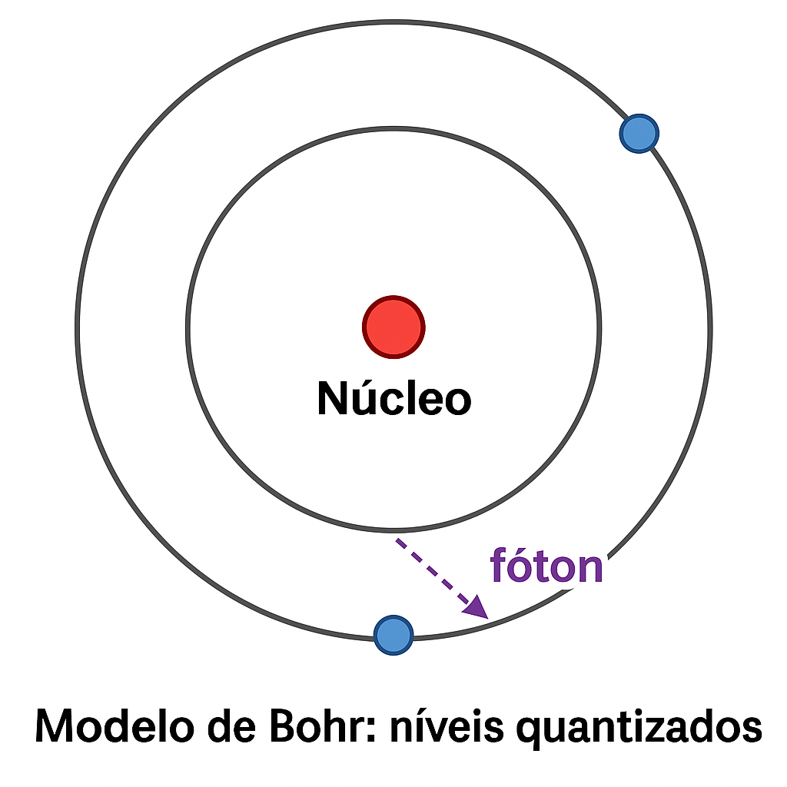

1 📚 🧬 Part 1 — Before the Quantum Revolution (In-Depth)
Special series on the 100 years of Quantum Mechanics. Part 1: Before the Quantum Revolution.
1.1 Before the Quantum Revolution
This post is part of the special series “100 Years of Quantum Mechanics”.
1.2 Introduction
By the end of the 19th century, physics seemed complete. Newton’s equations accurately described the motion of bodies — from the fall of an apple to the orbit of planets — based on forces and accelerations. Classical dynamics was grounded in the laws of motion:
And, especially, in the law of universal gravitation, which described the attraction between masses:
\[
F = G \cdot \frac{m_1 m_2}{r^2}
\]
Meanwhile, James Clerk Maxwell had consolidated knowledge about electricity and magnetism into Maxwell’s equations, which describe how electric and magnetic fields interrelate and propagate:
These equations not only explained electromagnetic phenomena but also predicted the existence of electromagnetic waves, whose speed matched that of light. This led to the revolutionary interpretation that light is an electromagnetic wave.
Portraits of Isaac Newton and James Clerk Maxwell
Figure: Sir Isaac Newton (1643–1727) and James Clerk Maxwell (1831–1879) — two pillars of classical physics.
The harmony between these laws — Newtonian mechanics and Maxwell’s electromagnetism — gave scientists of the time the feeling that the universe was completely understood.
In 1900, Lord Kelvin declared that the foundations of physics were established, with only two small clouds on the horizon — referring to minor experimental discrepancies.
These “clouds,†however, heralded a theoretical storm that would forever change our understanding of reality.
1.3 ğŸŒ¥ï¸ Lord Kelvin’s “Two Clouds†(1900)
Portrait of Lord Kelvin (1824–1907)
Figure: Lord Kelvin (William Thomson), Scottish physicist known for his contributions to thermodynamics and for identifying, in 1900, two “small clouds†on the horizon of physics. These clouds would foreshadow the greatest scientific revolutions of the 20th century.
In a lecture at the Royal Institution on April 27, 1900, the British physicist Lord Kelvin stated that there were only “two small clouds on the horizon of physics”:
“Clouds on the horizon of physics”
— Lord Kelvin, 1900
1.3.1 ☁️ First Cloud: Blackbody Radiation
“The failure of theory to explain the distribution of thermal radiation energy.”
This was the problem we now call the ultraviolet catastrophe:
The Rayleigh–Jeans law, derived from classical physics, predicted that the energy radiated by a blackbody increased indefinitely with frequency.
Experiments showed the opposite: energy increases, reaches a peak, and then decays at high frequencies.
Kelvin realized this deviation was not trivial — but he did not imagine it would require abandoning the paradigm of continuous energy.
This “cloud†was dispelled by Planck, with his hypothesis of energy quantization (1900).
🔠This marks the origin of quantum mechanics.
1.3.2 ☁️ Second Cloud: The Luminiferous Ether and Lorentz Transformation
“The inconsistency between Maxwell’s equations and the absence of ether detection.”
At the time, it was believed that light required a medium to propagate: the so-called luminiferous ether.
Maxwell’s equations predicted the speed of light \(c\), but did not make clear in which reference frame this velocity was valid.
The Michelson–Morley experiment (1887) showed that it was impossible to detect Earth’s motion relative to the ether.
This cast doubt on all of classical mechanics, which relied on absolute reference frames.
The “cloud†was only dispelled when Einstein proposed the Special Theory of Relativity (1905), eliminating the ether and postulating that the speed of light is the same for all inertial frames.
🔠This marks the origin of special relativity.
1.3.3 🧠Summary
☁️ Cloud
Problem
Historical Solution
New Theory
Thermal radiation
Divergence at high frequencies
Energy quantization (Planck, 1900)
Quantum Mechanics
Ether and speed of light
Failure to detect the ether
Einstein’s postulates (1905)
Special Relativity
1.4 The Ultraviolet Catastrophe
By the end of the 19th century, one of the great challenges of theoretical physics was to understand how heated objects — called blackbodies — emit thermal radiation. A blackbody is an idealized object that absorbs all incident radiation and reemits energy depending only on its temperature.
Idealized model of a blackbody
Figure: Idealized model of a blackbody: a cavity with reflective inner walls and a small opening. Radiation entering through the opening undergoes multiple reflections inside the cavity, being almost completely absorbed. The radiation emitted through the slit accurately represents the blackbody spectrum. This model was fundamental for the experiments that led to the birth of quantum mechanics.
The problem was to accurately describe the distribution of energy emitted at different frequencies (or wavelengths). Classical physics, using electromagnetic theory and Boltzmann statistics, led to the so-called Rayleigh–Jeans law, which predicted:
\[
E(\nu, T) \propto \nu^2 \cdot kT
\]
where:
\(\nu\) is the radiation frequency,
\(k\) is Boltzmann’s constant,
\(T\) is the temperature of the body.
This expression works well for low frequencies (infrared), but presents a serious problem at high frequencies: it grows indefinitely as \(\nu \to \infty\). This would imply that a blackbody emits infinite energy — a physical absurdity.
This impasse became known as the ultraviolet catastrophe. The term was coined because the error of classical theory became dramatic in the ultraviolet region of the electromagnetic spectrum, where the predicted energy completely diverged from experimental observations.
1.4.1 🔬 Experimental Evidence vs. Classical Theory
Experiments with blackbody cavities showed a very different behavior. The emitted energy increased up to a certain point, reached a peak, and then dropped sharply at high frequencies. The observed curve looked like this:

Graph of blackbody radiation and the ultraviolet catastrophe
Figure: The ultraviolet catastrophe is the error of classical theory in predicting that blackbody radiation increases without bound at high frequencies. In the graph, the black curve shows this prediction (Rayleigh–Jeans law), while the blue curve represents the actual data, correctly explained by Planck’s theory.
1.4.2 🧠A Conceptual Crisis
This problem was not merely technical — it was conceptual. If classical physics failed in something as fundamental as thermal radiation, perhaps its very foundations were incomplete. The solution would require abandoning the assumption of continuous energy.
This moment marked the beginning of a profound revolution in physical thought. In 1900, Max Planck dared a radical hypothesis: energy could only be emitted in discrete quantities, or quanta. This idea would give rise to the entire framework of quantum mechanics.
1.5 Planck’s Quantization
In 1900, faced with the impasse of blackbody radiation, Max Planck proposed a revolutionary solution — though he himself was not fully aware of the depth of his proposal. To fit the emission curve to experimental data, Planck introduced a radical hypothesis: energy cannot be emitted continuously, but only in discrete multiples of an elementary quantity.
This elementary amount of energy is proportional to the frequency of radiation:
\[
E = h \cdot \nu
\]
where:
\(E\) is the energy of the radiation quantum,
\(\nu\) is the radiation frequency,
\(h\) is Planck’s constant, introduced by him:
\[
h = 6.626 \times 10^{-34} \ \text{J·s}
\]
Planck derived this formula by adjusting the distribution of energy emitted by a blackbody using statistical and thermodynamic principles. The new Planck law for the spectral energy density is:
For low frequencies (\(h\nu \ll kT\)), it approaches the Rayleigh–Jeans formula.
For high frequencies (\(h\nu \gg kT\)), the exponential term dominates, and the energy tends to zero, as observed experimentally.
1.5.1 🔠The Disguised Revolution
Curiously, Planck considered his proposal a “mathematical trick.†He himself was skeptical about the idea that energy was truly quantized in nature. And yet, his formula worked — with surprising precision.
Thus emerged the first physical expression involving the constant \(h\), which would later become the universal symbol of quantum mechanics.
Did you know?
Planck only adopted quantization as a last resort, since he had unsuccessfully tried to justify the data using classical methods. His initial hesitation is an example of how the greatest scientific revolutions sometimes arise reluctantly.
“It was a matter of desperation. I was trying to fit the data and had to invent something completely new.”
— Max Planck (retrospective account of 1900)
Portrait of Max Planck
Figure: Max Planck (1858–1947), the physicist who proposed the quantization of energy and introduced the constant \(h\). The formula \(E = h \nu\) became the foundation of quantum physics.
Tip🔬 Planck’s “Mathematical Trick†— The Discrete Revolution via Series
To solve the blackbody radiation crisis, Max Planck proposed in 1900 a bold hypothesis: the energy of the oscillators producing thermal radiation could only be emitted in discrete quantities, called quanta:
\[
E_n = n h \nu, \quad \text{with } n = 0, 1, 2, \dots
\]
1.5.2 🧱 Physical Model: Quantized Oscillators
Planck imagined that radiation was produced by harmonic oscillators — small electric charges vibrating in the walls of the cavity. In classical physics, these oscillators could have any continuous energy. Planck, however, proposed:
âš ï¸ The energy of each oscillator does not vary continuously, but only in integer multiples of an elementary amount \(h \nu\).
💡 Note: Planck modeled the constituents of the cavity as classical harmonic oscillators — i.e., small electric charges vibrating under restoring forces (like electrons bound in atoms or molecules). These oscillators absorb and emit electromagnetic radiation, and their statistical energy distribution formed the basis for deriving the blackbody radiation formula. This idealization was consistent with the knowledge of the time and essential for introducing energy quantization.
1.5.3 📊 Entropy and Boltzmann Statistics
1.5.3.1 📊 The Formula \(S = k \ln W\) and Planck’s Application
To derive his blackbody radiation formula, Max Planck used a key concept from statistical mechanics: the relationship between entropy and the number of microstates, proposed by Ludwig Boltzmann:
\[
S = k \ln W
\]
This equation relates:
\(S\): the entropy of a system — a measure of disorder or of the number of microscopic possibilities for the same macroscopic state;
\(W\): the number of possible microstates — that is, how many ways the energy quanta can be distributed among the system’s oscillators.
The logarithmic function ensures that entropy is proportional to the system size: doubling the number of microstates doubles \(\ln W\), but does not directly multiply \(W\).
1.5.4 🧠How Did Planck Use This?
Planck assumed that energy was composed of discrete multiples of \(h \nu\). He then calculated:
How many ways \(W\) there were to distribute \(n\) energy quanta among \(N\) oscillators;
Applied Boltzmann’s relation to obtain the entropy of the system: \(S = k \ln W\);
Related entropy and temperature through the thermodynamic identity \(\frac{dS}{dE} = \frac{1}{T}\);
Finally obtained the average energy\(\langle E \rangle\), which leads to the correct formula for thermal radiation.
This was the first time statistics with quantized energy was applied — and the beginning of the transition from classical physics to quantum mechanics.
The innovation lay in how to count \(W\): assuming that the total energy was made up of \(n\) quanta \(h\nu\), he used statistical combinatorics to determine the average energy of the oscillators:
\[
\langle E \rangle = \frac{\sum\limits_{n=0}^\infty E_n e^{-E_n / kT}}{\sum\limits_{n=0}^\infty e^{-E_n / kT}} = \frac{\sum\limits_{n=0}^\infty n h \nu \cdot e^{-n h \nu / kT}}{\sum\limits_{n=0}^\infty e^{-n h \nu / kT}}
\]
With \(x = e^{-h \nu / kT}\), this becomes:
\[
\langle E \rangle = h \nu \cdot \frac{\sum\limits_{n=0}^\infty n x^n}{\sum\limits_{n=0}^\infty x^n}
\]
Applying known geometric series:
\(\sum_{n=0}^{\infty} x^n = \frac{1}{1 - x}\)
\(\sum_{n=0}^{\infty} n x^n = \frac{x}{(1 - x)^2}\)
We obtain:
\[
\langle E \rangle = h \nu \cdot \frac{x}{1 - x} = \frac{h \nu}{e^{h \nu / kT} - 1}
\]
1.5.5 📈 The Final Formula: Planck’s Law
By multiplying the average energy by the number of modes \(\propto \nu^2\), Planck arrived at the complete formula for blackbody radiation:
This formula fixes the divergence of the Rayleigh–Jeans law and matches experimental data perfectly.
1.5.6 📌 Summary of the “Trick”:
Hypothesis: quantized energy \(E = n h \nu\)
Calculation: Boltzmann statistics with discrete counting
Result: correct average energy
Conclusion: blackbody radiation formula validated experimentally
1.5.7 🧠Reflection
“Planck treated quantization as a mathematical device to fit the data. He did not believe that physical oscillators truly had discrete energy levels.
But Einstein, soon after, would take this idea seriously — and show that light itself really behaves like a particle.”
“It was a matter of desperation. I was trying to fit the data and had to invent something completely new.”
— Max Planck
In the next section, we will see how Einstein took Planck’s idea seriously — applying the quantization of light to explain the photoelectric effect — and how this idea would become the foundation of the new physics.
1.6 The Photoelectric Effect and Einstein’s Photons
Albert Einstein (1879–1955)
Albert Einstein (1879–1955), the physicist who explained the photoelectric effect with the photon hypothesis, inaugurating a new era in physics.
In 1905, Albert Einstein published a revolutionary paper entitled “On a Heuristic Viewpoint Concerning the Production and Transformation of Light.†In it, he proposed that light not only behaves as a wave but also as a stream of discrete energy particles — the light quanta, today called photons.
For Einstein, Planck’s quantization was not just a mathematical device. It represented a fundamental physical property of electromagnetic radiation. The clearest empirical evidence of this came from an intriguing phenomenon: the photoelectric effect.
1.6.1 ⚡ What Is the Photoelectric Effect?
The photoelectric effect is the emission of electrons from a metallic surface when it is illuminated by light of sufficiently high frequency.
1.6.1.1 🔠Experimental observations:
Electron emission only occurs above a minimum frequency\(\nu_0\) — called the threshold frequency.
The intensity of the light affects the number of electrons emitted, but not their kinetic energy.
The energy of emitted electrons increases with the frequency of light, not with its intensity.
These results were incompatible with classical wave theory, which predicted that intense light (even at low frequency) could supply enough energy to release electrons — which is not what experiments show.
1.6.2 💡 Einstein’s Hypothesis: Light as Packets of Energy
Einstein proposed that light is made up of particles — photons — and that each photon carries a discrete amount of energy:
\[
E = h \nu
\]
When a photon strikes an electron on the metal surface:
Part of the energy is used to overcome the material’s work function, denoted by \(\phi\);
The remainder appears as the electron’s kinetic energy \(K\).
1.6.3 🧮 Einstein’s Photoelectric Equation
The equation summarizing this process is:
\[
h \nu = \phi + K
\quad \Rightarrow \quad K = h \nu - \phi
\]
This equation was experimentally verified by Robert Millikan between 1905 and 1915 — ironically, he had set out to disprove Einstein but ended up confirming his theory with remarkable precision.
Diagram of the photoelectric effect
Figure: In the photoelectric effect, light shines on a metallic surface. If the frequency is high enough, photons transfer their energy to electrons, which are ejected with kinetic energy proportional to the frequency of the light.

Photoelectric Effect explained by Einstein (1905)
Figure — The Photoelectric Effect explained by Einstein (1905):
Light shines on a metallic surface as photons, each carrying energy \(E = h\nu\). When the photon’s energy exceeds the work function \(\phi\), an electron is ejected with kinetic energy \(K = h\nu - \phi\). This phenomenon confirms the particle-like nature of light.
# R code:# Photoelectric Effect: K = hν − φ# Constantsh<-6.626e-34# Planck constant (J·s)phi<-2.2e-19# work function (J)# Frequencies (Hz)nu<-seq(4e14, 1.2e15, length.out =100)# Kinetic energy (J)K<-h*nu-phiK[K<0]<-0# negative energy is not physically meaningful# Threshold frequencynu_0<-phi/h# ≈ 3.32e14 Hz# Plotplot(nu, K, type ="l", col ="blue", lwd =2, xlab =expression("Light frequency ("*nu*") [Hz]"), ylab =expression("Kinetic energy ("*K*") [J]"), main =expression("Photoelectric Effect: "*K==h*nu-phi), xlim =c(3e14, 1.2e15))# Threshold frequency lineabline(v =nu_0, lty =2, col ="gray", lwd =2)# Highlight threshold pointpoints(nu_0, 0, pch =19, col ="red")text(nu_0, 0, labels =expression(nu[0]), pos =4, col ="red", cex =0.9)# Legendlegend("topleft", legend =c(expression(K==h*nu-phi), expression(nu[0]==phi/h)), col =c("blue", "gray"), lwd =2, lty =c(1, 2))
Figure: Graph of the photoelectric effect predicted by Einstein. The blue line represents the equation \(K = h\nu - \phi\), which relates the kinetic energy of electrons to the frequency of light. The dashed gray line marks the threshold frequency \(\nu_0 = \frac{\phi}{h}\), below which no electrons are emitted.
1.6.4 🅠Recognition and Impact
Einstein was awarded the 1921 Nobel Prize in Physics — not for his theory of relativity, but for his explanation of the photoelectric effect. His proposal consolidated the idea that light has a dual nature: sometimes behaving as a wave, sometimes as a particle.
This discovery paved the way for the entire formulation of modern quantum mechanics, showing that quantization applied not only to matter — but also to radiation itself.
“It is the theory which decides what we can observe.”
— Albert Einstein
1.7 🌌 Bohr’s Atom
NoteNiels Bohr (1885–1962)

Portrait of Niels Bohr
Figure: Niels Bohr proposed, in 1913, an atomic model with quantized energy levels — a milestone in the construction of quantum theory.
The emission spectrum of hydrogen displayed sharp, well-defined lines, as if electrons could only occupy specific energy levels.
➡️ In 1913, Niels Bohr proposed a radical atomic model for the time. According to him, electrons:
Orbit the nucleus only in permitted orbits, with quantized energies;
Emit or absorb light only when jumping between these levels.
With this, Bohr could explain the hydrogen spectrum: the emitted photons have an energy determined by the difference between levels:
\[
\Delta E = E_2 - E_1 = h\nu
\]
📌 His proposal directly connected the concept of quantization to the structure of the atom — a major blow to the continuous foundations of classical physics.

Bohr model: quantized levels
Figure: The electron jumps from the second to the first energy level, emitting a photon (represented by the purple arrow).
1.8 🧨 A System in Crisis
The phenomena analyzed so far — blackbody radiation, the photoelectric effect, and atomic spectra — pushed classical physics against the wall:
Light behaved like a particle;
Energy was emitted and absorbed in discrete quantities;
Atoms displayed quantized structures, not continuous ones.
This new theory would appear in 1925, breaking with centuries of classical intuition.
With decisive contributions from Heisenberg, Schrödinger, Born, Dirac, and others, Quantum Mechanics was born — a scientific revolution comparable to those of Copernicus or Newton.
With it, understanding the atom came to mean rethinking the very nature of reality.
1.9 🔚 Conclusion of Part 1 — The Limits of Classical Physics
At the end of the 19th century, physics seemed complete — but the phenomena of blackbody radiation, the photoelectric effect, and atomic spectra exposed deep cracks in classical theory.
Each of these phenomena revealed something the established physics could not explain:
Thermal radiation required a new way to distribute energy;
Light appeared to behave like a particle, not only as a wave;
The structure of atoms was not continuous, but quantized.
These challenges opened the path to a new way of thinking — a conceptual revolution that demanded abandoning old certainties.
The microscopic reality revealed its own rules, and understanding the atomic world would require new mathematical tools, new principles, and a new physics.
NoteNext Part: The Revolution Begins (1925)
The journey of Quantum Mechanics is just beginning.
In Part 2, we will see how Werner Heisenberg, Erwin Schrödinger, and others built the new quantum theory.
2 Next Reading
➡️ Next part: [Part 2 — The Revolution Begins (1925)]